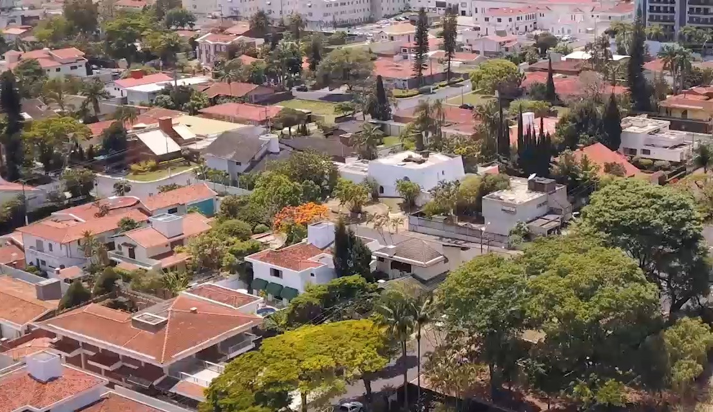
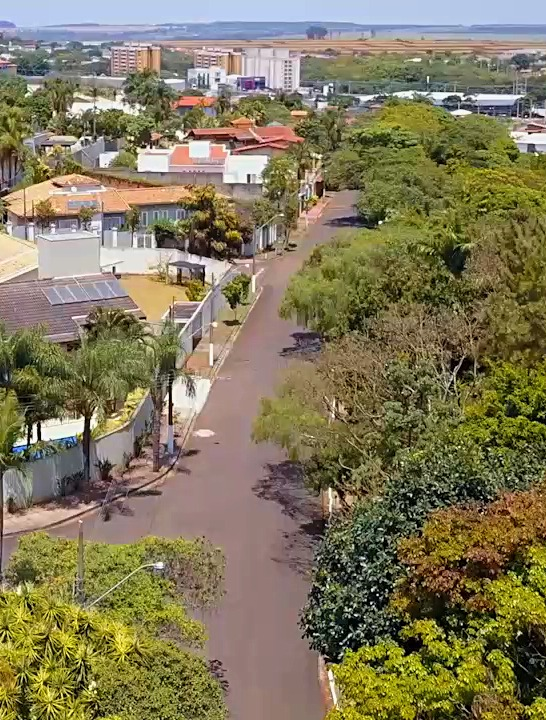
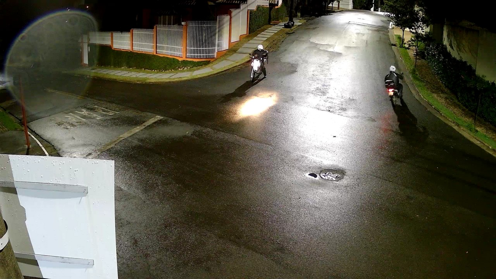

Localizado próximo ao centro, SESC e Shopping, o bairro é composto de residências cercadas de ruas seguras e iluminadas, nas quais os moradores fazem atividades físicas e passeiam com seus pets. Rodeado de bosques com uma flora exuberante que refresca e embeleza o bairro, além de promover a visita de visitantes ilustres da fauna como tucanos, andorinhas e teiús. É um bairro que oferece uma qualidade de vida ímpar!

Bosques repletos de árvores cercam o bairro, melhorando a qualidade de vida e o microclima do bairro. Também proporciona um local para que a fauna e flora convivam em harmonia com os moradores. Há bancos de descanso e postes de iluminação no perimetro dos bosques. As casas que compõem o bairro também possuem diversas áreas verdes em seus jardins e suas calçadas.

Para manter a limpeza do ambiente, há lixeiras e pontos de saquinho de coleta de dejetos de animais disponíveis no entorno dos bosques. Há passagem de coleta seletiva e pontos fíxos de descarte consciente para esponja, pilhas e óleo de cozinha. Com isso favorecendo a sustentabilidade e a limpeza das ruas do bairro. Preservamos a natureza para possibilitar um futuro saudável aos nossos filhos e netos!
Aqui as ruas são seguras, pois são bem iluminadas e com ronda de vigilantes que auxiliam na entrada de residência, além de possuir câmeras de segurança de alta resolução ligadas 24h/dia. Isso contribui para que esse bairro seja um dos mais seguros da cidade!
